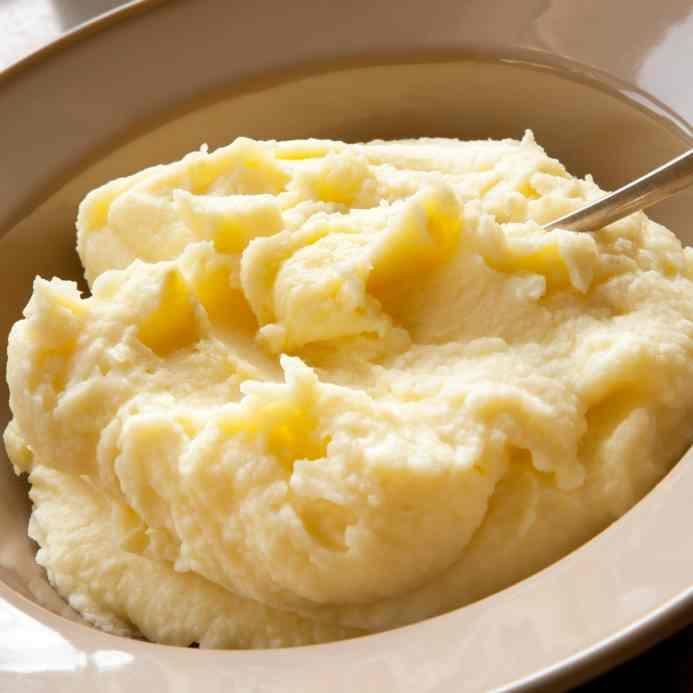

Preparación
- Lavar y pelar las papas.
- Cortar las papas en cubos y ponlas a hervir en una olla con abundante agua y sal hasta que estén suaves.
- Escurrir las papas y ponerlas en un bol grande.
- Agregar la manteca, la leche, la sal y la pimienta.
- Usar un pisapapas o una batidora de mano para machacar las papas hasta que queden suaves y cremosas.
- Servir el puré de papas inmediatamente.

Ahora puede disfrutar su delicioso puré!!